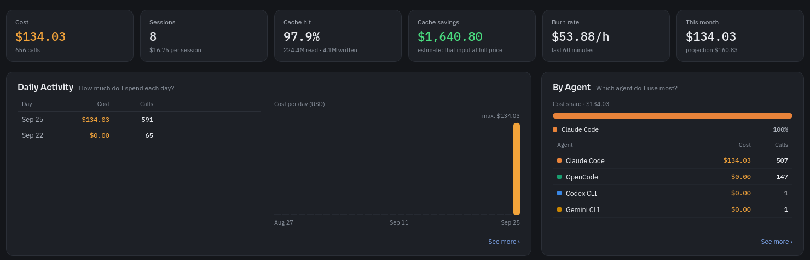
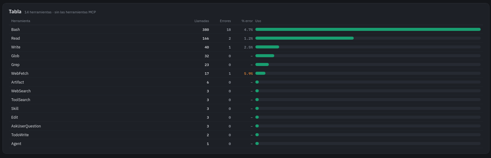

El panel de coste y actividad de tus agentes de código, en local.
Reúne en una sola vista qué hacen Claude Code, Codex, Copilot, Cursor, Gemini y OpenCode —y cuánto cuestan— leyendo los logs que ya tienen en el ordenador. Nada sale de la máquina.
Los agentes de código generan mucha actividad —llamadas al modelo, tokens, sesiones, herramientas, comandos— y con ella un gasto repartido y opaco en cada herramienta. AgentBoard lee esos registros, los cruza y los presenta en un panel, sin enviar nada fuera del equipo.
Un panel lateral para organizarlo todo y cada apartado con su tabla y su gráfico.


Coste y uso de un vistazo, más las funciones que se esperan de una app de escritorio.
Gasto del día y del mes, proyección a fin de mes y aviso al acercarse al presupuesto.
Qué agente y qué modelo se usan más, y con qué eficiencia de caché.
Reparto entre coding, testing, debugging, exploración… y por proyecto y rama.
Uso y porcentaje de error por herramienta y por comando de shell.
Relee los logs al vuelo; el panel se actualiza sin recargar.
Gasto del mes en la bandeja, avisos de presupuesto, exportar a CSV/JSON, temas e idiomas.
Además de la interfaz, un servidor MCP expone los mismos datos a cualquier agente compatible (Claude Code, Codex, Gemini, Cursor, OpenCode). Así un agente puede preguntar «¿cuánto llevo gastado este mes?» durante una conversación, sin abrir la app.
# compilar y registrar en Claude Code
cargo build --release --bin agentboard-mcp
claude mcp add agentboard -- ./target/release/agentboard-mcp
15 herramientas (get_summary, get_cost_by_model, get_daily, list_agents…), todas con filtro de periodo, agentes y proyectos.
Elige el instalador de tu sistema. Todos se generan automáticamente en cada versión.